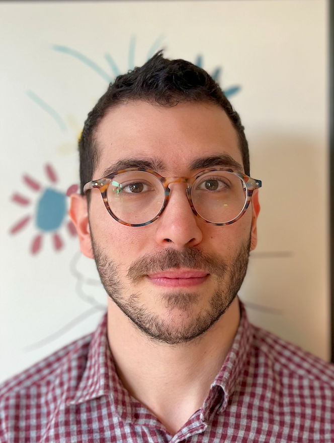
I am a PhD candidate at King's College London, funded by the NMES Studentship. My doctoral research explores how flow-matching-based generative models can be used for reconstructing and estimating sound fields in immersive audio environments. My research also spans sound field interpolation and extrapolation methods, scattering delay networks (SDN), and the calibration of spherical microphone arrays.
I have been fortunate to have research internships at National Institute of Informatics (NII) Tokyo, and Music Technology Group, UPF Barcelona. Prior to that, I worked as an architectural acoustics consultant and noise control engineer at Mezzo Studyo, designing acoustically optimised spaces such as concert halls, underground stations, and corporate offices. I completed my B.Sc. in Mechanical Engineering and M.Sc. in Multimedia Informatics at METU, where I worked as a Research & Teaching Assistant in the Spatial Audio Research Group.
Outside of academia, I enjoy documenting life and expressing emotions through storytelling and videography, host a podcast, and play jazz piano. I could write some sports as well but I suddenly stop playing after starting PhD, and gained 5kg eating ramen during my Tokyo internship.
Google Scholar · GitHub · Email · LinkedIn
·
I once thought would be the main story.
Tap to drop a note into the sound field
some text ...
Short films, YouTube videos, reels and podcasts.
Small apps and experiments, made outside research.
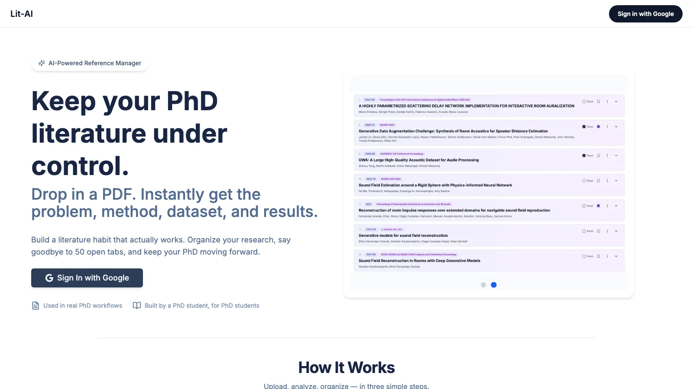
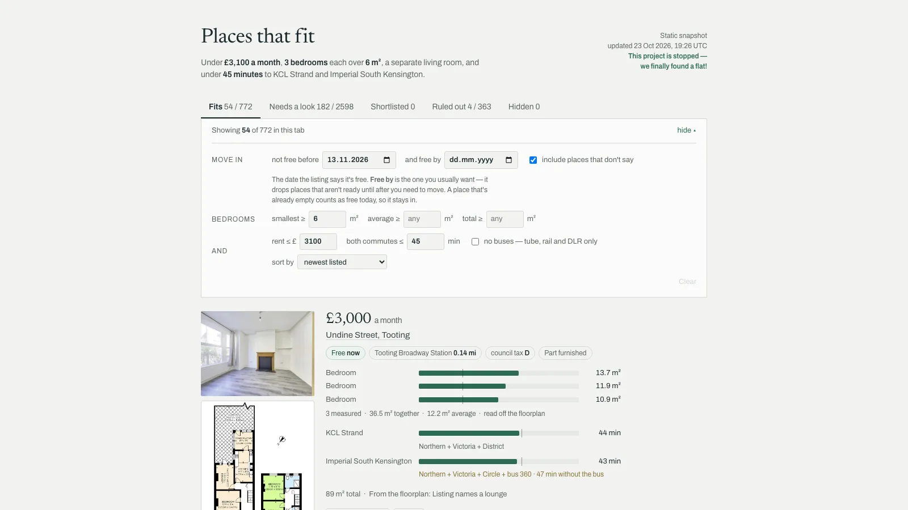
My most random hobby.
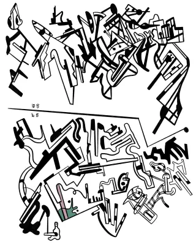
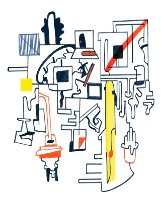
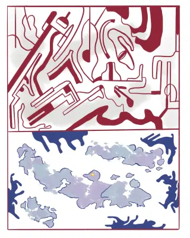
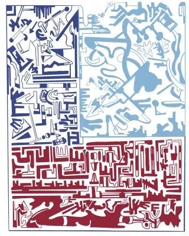
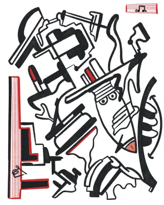
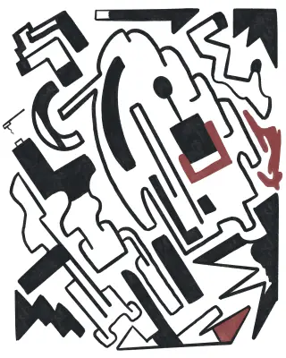
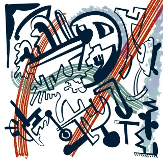
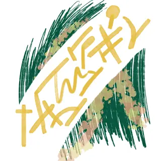
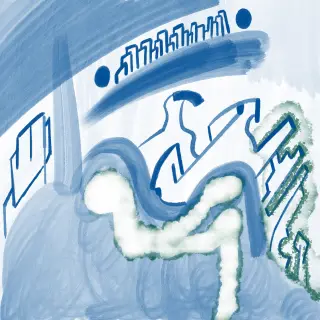
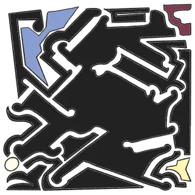
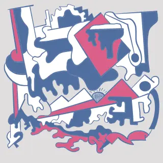
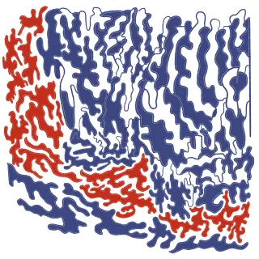
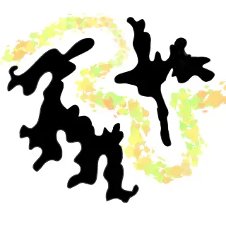
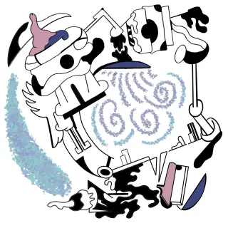
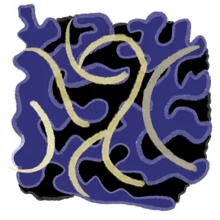
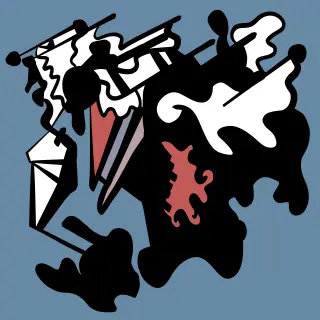
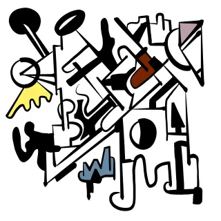
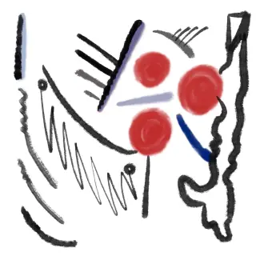
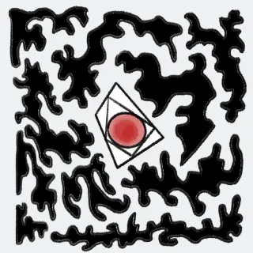
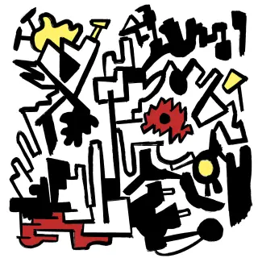
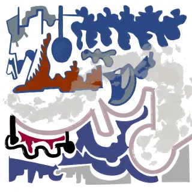
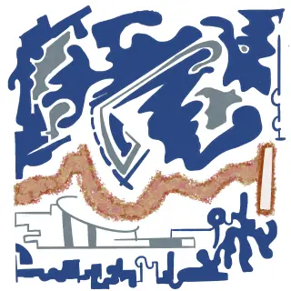
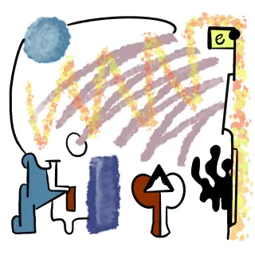